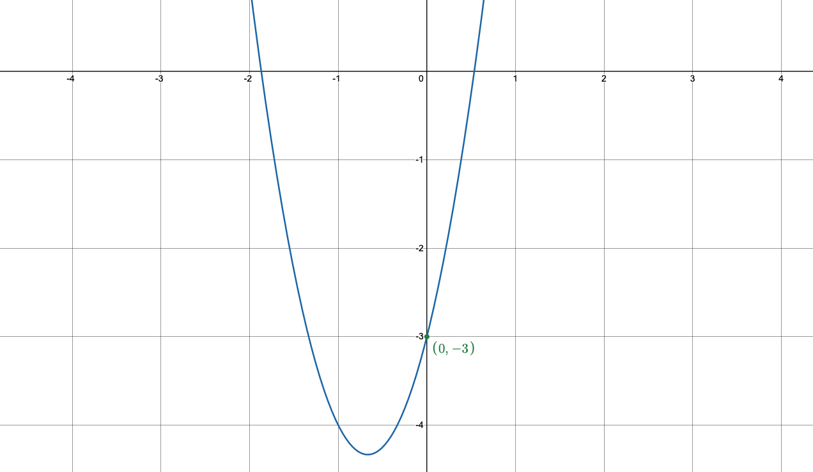
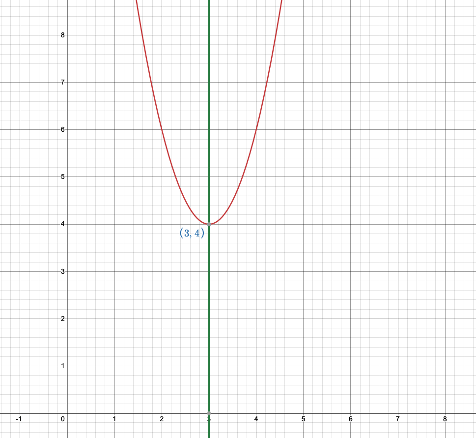
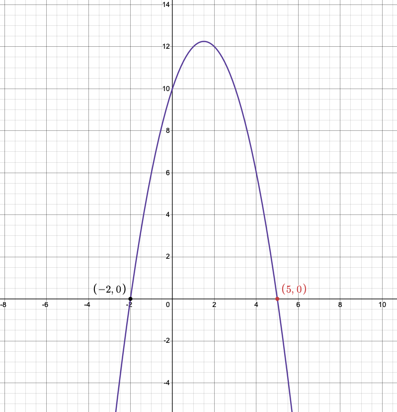
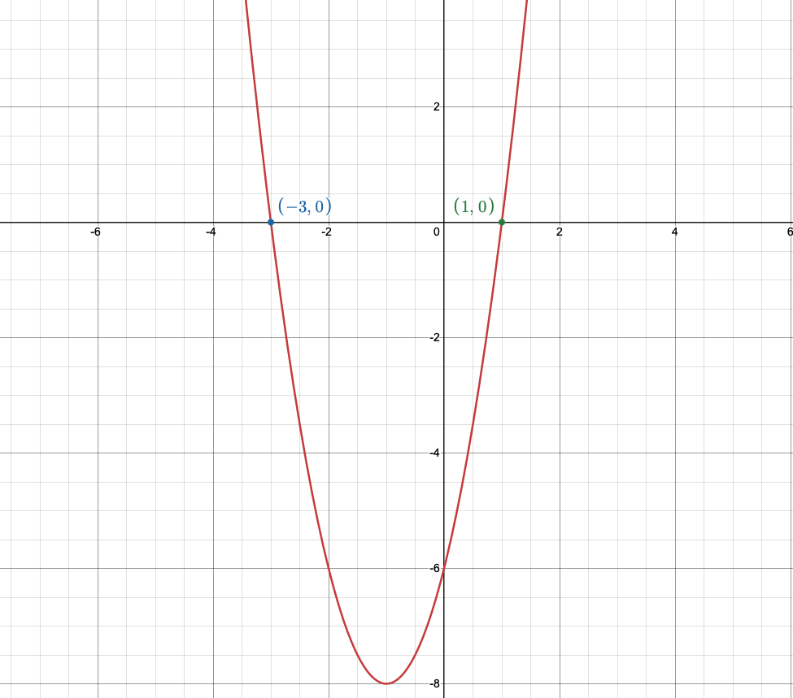
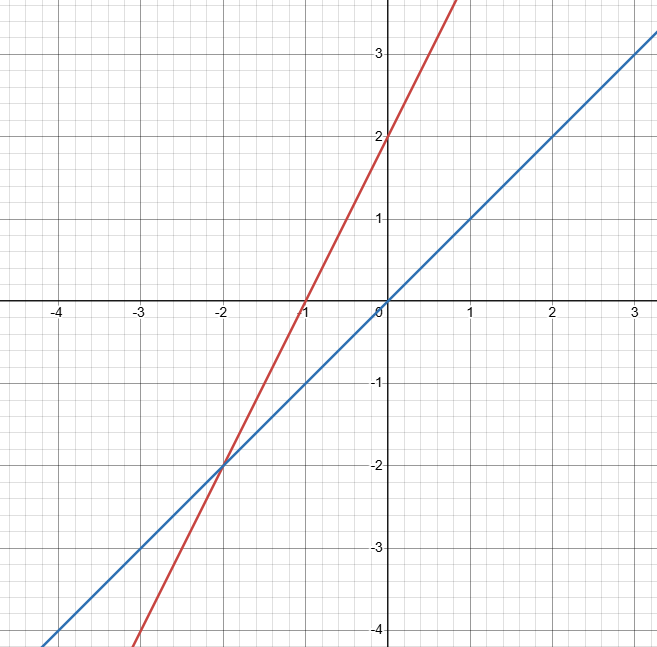
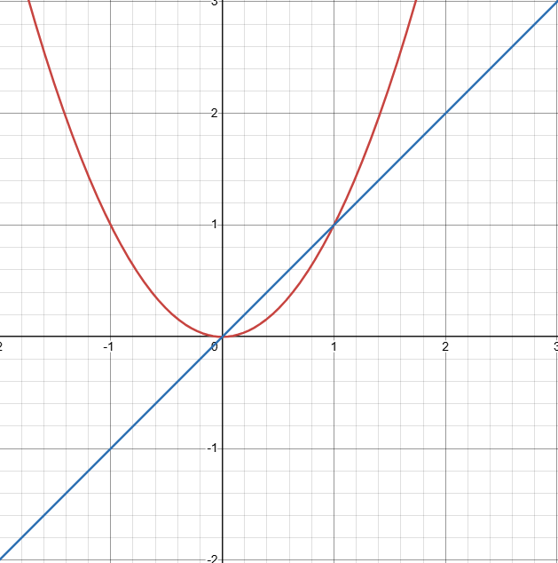

Project AD Math 20/20IB Section
What is Math 20?
Math 20 is the second mathematics course in high school and is a prerequisite for Math 30. In the case of IB students, Math 20IB is a prerequisite for Math 30 SL and HL, and also Math 25 HL.
What's in Math 20?
Note: IB topics will appear not in their own section, ergo they will appear in the middle of non-IB topics.
This is because in most cases it makes sense to learn it there.
Math 20 and 20IB goes over six (6) units; quadratic functions and equations, systems of equations and inequalities, sequences and series, radicals and absolute values, rationals and reciprocals, and reasoning and trigonomtery.
Quadratic Functions and Equations
A quadratic function always has a degree of two (2). There are three (3) forms. Another word for a quadratic function is a parabola.
Here is the vocabulary that you need to know.
- Direction of opening
- The direction of which the graph opens. If it opens up, it will look like a U and if it opens down it will look like an upside-down U.
- y-intercept
- The point at which the graph touches the y-axis, or what the y-value is when x = 0. It is expressed as the point (0 , y)
- x-intercept
- The point(s) at which the graph touches the x-axis, or what the x-value is when y= 0. There can be one, two, or none at all depending on the graph. It is expressed as the point (x, 0)
- Vertex
- The point on a quadratic where the graph deflects. If we consider the graph to look like a U then the vertex is at the very bottom point of the U. It is expressed as the point (x , y)
- Domain
- The set of all x-values for which the graph exists. For any quadratic function, the domain will always be from negative infinity to positive infinity. This means that the graph's x-value exists no matter where you go horizontally on the graph.
- Range
- The set of all y-values for which the graph exists. This is dependent on the graph's direction of opening and its vertex.
Forms of quadratics
General form
\[ax^2 + bx + c\]
This form tells us the direction of opening and the y-intercept. The y-intercept in this form is the value of c. The direction of opening is determined by the value of a: if a is positive, the parabola opens upwards; if a is negative, the parabola opens downwards.
For example: y = 3x2 + 4x + 6

In this case, the graph intersects the y-axis at y = 6, or at the point (0.6) and opens upwards because a = 3 and a is positive
Standard/Vertex form
\[a(x - h)^2 + k\]
This form tells us the vertex of the parabola, the direction of opening, axis of symmetry, and whether there is a max or min value. The vertex in this form is the point (h, k). The direction of opening is deteremind by the value of a just like in general form. The axis of symmetry is the vertical line defined by x = h. The max or min value is also determined by a: if a is positive, there is a minimum value at the vertex (the parabola cannot go any lower than that point); if a is negative, there is a maximum value at the vertex (the parabola cannot go any higher than that point)
For example: y = 2(x - 3)2 + 4

In this case, the vertex is at the point (3, 4), the direction of opening is upwards because a = 2 and a is positive, the axis of symmetry is the vertical line x = 3, and there is a minimum value of 4 at the vertex, meaning the graph of the parabola may not go any lower than y = 4.
A common mistake is mistaking h as -h, or vice versa. In the previous example, even though in standard form it is written 2(x - 3)2 + 4 the value of h is NOT -3 but is instead 3. Again, standard form is written as a(x - h)2 + k, so be careful with the signs.
Factored form
\[(x + p)(x + q)\]
This form is useful for finding the x-intercepts, which are also called the "solutions" of a function or graph. The x-intercepts are where the graph crosses the x-axis, or where y = 0. The x-intercepts in this form are r and s. As well, the direction of opening is determined by the value of a just like in general and standard form. Later on, you may encounter functions with more than two (2) factors, but for now we will only focus on quadratics, because cubic functions are scary.
For example: y = -1(x + 2)(x - 5)

In this case, the graph intersects the x-axis at x = -2 and x = 5, or at the points (-2, 0) and (5, 0), and opens downwards because a = -1 and a is negative.
Solving quadratic equations
There are three possible outcomes when solving a quadratic equation. You either get two (2) distinct and real roots, one (1) distinct and real root, or no (0) real roots, or two imaginary roots.
The solutions of a quadratic equation are the x-intercepts, or the x-value when y = 0.
Solving graphically
Knowing this, we can solve the quadratic equation graphically. We do this using a graphing display calculator (GDC), or just "calculator" for short. We recommend the Ti-84 or the Ti-83. We can graph the the quadratic equation in any of the forms as long as y is isolated. What this means is that we can graph y = 3x2 + 4x + 3 but we cannot graph 3y = 12x2 + 9x + 6. Instead we would have to simplify it to get y on its own on one side of the equation. Only after that can we graph.
Again, any of the forms (general, vertex, or factored) will work.
After inputting our equation into the calculator, we can look at the graph and see where the graph of the parabola (reminder: parabola is another word for quadratic) touches the x-axis. Those points are the solution to the quadratic equation. Remember, though, that it is possible to have zero, one, or two solutions depending on the graph. We will demonstrate this further on.
For example, the graph of y = 2(x+1)2 - 8

We can see here that the graph of 2(x+1)2 - 8 intersects the x-axis at the points (-3, 0) and (1, 0), or at the points -3 and 1 on the x-axis. So, the solutions to the quadratic are at x = -3 and x = 1. (This is how you can write your final answer on a written question)
Solving algebraically
When we solve a quadratic algebraically, we have to make sure y is isolated and by itself, just like with the graphical solution.
Let's consider how to solve it just like the previous problem.
y = 2(x+1)2-8
0 = 2(x+1)2 - 8 (since we know that the solutions are on the x-intercept or when y = 0)
8 = 2(x+1)2
4 = (x+1)2
At this point, we square root 4. However, because it is a square root, we get two different solutions, +2 or -2. If we reverse the process, we will see that both (+2)2 and (-2)2 will equal to 4. This is an important concept. Because of this, we will have to consider both when getting our final answer of x.
+2 = (x+1) 1 = x
And our other solution:
-2 = (x+1)
-3 = x
Both are solutions, and if we plug either one back into the original quadratic, we will find that they work.
Testing for x = -3, y = 0:
y = 2(x+1)2 - 8
0 = 2((-3)+1)2 - 8
8 = 2(2)2
8 = 2(4)
8 = 8
And testing for x = 1, y = 0:
y = 2(x+1)2 - 8
0 = 2(1+1)2 - 8
8 = 2(2)2
8 = 2(4)
8 = 8
We see from checking that the solutions work, since one side equals the other. Also notice that these answers are the same as solving them graphically. In both cases the solutions are the same; x = -3, x = 1.
Completing the square
We use the "completing the square" method when we want to convert from general form to vertex form, because you cannot solve algebraically with general form.
Developer's notes: I mean, you can try to I guess?
We start with a quadratic equation in general form: \[ax^2 + bx + c = 0,\] where \(a\), \(b\), and \(c\) are constants and \(a \ne 0\).
The goal of completing the square is to rewrite the quadratic as a perfect square, and then add or subtract a constant outside the perfect square. This makes solving the equation or converting the quadratic to vertex form easy.
Divide the first two terms by \(a\):
\[\frac{a}{a}(x^2 + \frac{b}{a}x) + c = 0\]
\[a(x^2 + \frac{b}{a}x) + c = 0\]
\[a(x^2 + \frac{b}{a}x + (\frac{b}{2a})^2 - (\frac{b}{2a})^2) + c = 0\]
\[a(x^2 + \frac{b}{a}x + (\frac{b}{2a})^2) - (\frac{ab}{2a})^2 + c = 0\]
\[a(x + h)^2 + (\frac{-ba}{2a})^2 + c = 0\]
\[a(x + h)^2 + k = 0\]
You will be using this so so so so so so much both developers cannot stress this enough.
But let's look at completing the square in practice.
\[2x^2 + 8x + 11 = 0\]
\[2(x^2 + 4x) + 11 = 0\]
\[2(x^2 + 4x + ((\frac{1}{2})(4))^2 - ((\frac{1}{2})(4))^2) + 11 = 0\]
\[2(x^2 + 4x + 4 - 4) + 11 = 0\]
\[2(x^2 + 4x + 4) + (-4)(2) + 11 = 0\]
\[2(x^2 + 4x + 4) -8 + 11 = 0\]
\[2(x + 2)^2 + 3 = 0\]
If you graph both \(2x^2 + 8x + 11\) and \(2(x + 2)^2 + 3\) they will be the same graph.
Note: Remember, though, that vertex form is actually written as \(a(x - h)^2 + k\), so be careful with the value of \(h)\ and whether it is positive or negative.
Solving by factoring
Admittedly, this one is the most confusing one to explain.
Factoring is turning your quadratic into the form \((x + p)(x + q)\) from, usually, \(ax^2 + bx + c\). Factoring only works sometimes, in that sometimes you get a not nice quadratic that doesn't factor nice, and you have to use the quadratic formula (which will be covered in the last section of solving quadratics algebraically). So keep in mind that this method might not always work.
When we want to factor, we must first find two numbers.
The two numbers must add up to the value of \(b\) and multiply into the value of \(c\).
For instance, in the quadratic equation \(x^2 + 5x + 6\) our two numbers are \(2\) and \(3\).
\[x^2 + 5x + 6\] \[b = 5, c = 6\] \[2 + 3 = 5\] \[(2)(3) = 6\]
Your two numbers are not entirely limited to positive numbers. Either can be negative as well.
\[x^2 - 6x - 16\] \[b = -6, c = -16\] \[(-8) + (2) = -6\] \[(-8)(2) = -16\]
Our final scenario for factoring a quadratic is when there is a value of \(a\) that is non-zero. In this case, we multiply the value of \(c\) and \(a\) and find two numbers that add to \(b\) but multiply to \(ac\).
\[2x^2 -2x -4\] \[b = -2, ac = -8\] \[(-4) + (2) = -2\] \[(-4)(2) = -8\]
Developer's note: For this one, I personally think that it takes a bit of practice to be able to quickly get the two numbers you need. I don't think there's really an easy way to do it, you just have to brute force things. Kind of.
Solving using the quadratic formula
This is basically the last way to solve a quadratic, and it's also kind of the ugliest. If we look at the formula we will see why.
\[\boxed{x = \frac{-b \pm \sqrt{b^2 - 4ac}}{2a}}\]
The way you use the quadratic formula is by plugging in the values of \(a\), \(b\), and \(c\) from the equation of \(ax^2 + bx + c\). The quadratic formula only works with this form.
Keep in mind you will get two answers from using the quadratic equation.
Discriminants
Discriminants are basically the way you can tell whether there is only one solution, two solutions, or no solutions at all. You find this from the value of \(b^2 - 4ac\)
\(b^2 - 4ac > 0\) then there will be two solutions.
\(b^2 - 4ac = 0\) then there will be tone solution.
\(b^2 - 4ac < 0\) then there will be NO solutions because it produces an imaginary number.
And that concludes the quadratics unit.
Systems of equations
Here is the vocabulary that you need to know.
- Solution(s)
- Where two functions intersect. Can be one, none, or infinitely many (we will look at this in classification). The functions do no necessarily have to be straight lines.
- y-intercept
- The point at which the graph touches the y-axis, or what the y-value is when x = 0. It is expressed as the point (0 , y)
- x-intercept
- The point(s) at which the graph touches the x-axis, or what the x-value is when y= 0. There can be one, two, or none at all depending on the graph. It is expressed as the point (x, 0)
Classifying Systems
Systems of linear equations can have exactly one solution, no solutions, or infintely many solutions./p>
Intersecting lines (one solution)
Different slopes
Yeah that's it for this one lol
Parallel lines (no solutions)
Same slopes, different y-intercepts
Because they are parallel and one is always above/below the other, they will never meet each other, hence there is no solution.
Coincident lines (infinite solutions)
Same slopes, same y-intercepts
Because these two lines are on the same spot, they will always be intersecting/touching at any given point, hence there are infinite solutions.
Solving systems graphically
To graphically solve a system, we just need to know where the two intersect each other on a graph.
Needless to say, you need to graph the two lines.
Let's look at an example.
\[y = 2x + 2 (red)\] \[y = x (blue)\]

As we can see, the two lines intersect at the point (-2, -2) so the solution to this system is (-2, -2).
And that's about it for graphically solving it, really.
Solving algebraically
This is pretty similar to solving a quadratic, except that this time we set the two equations equal to each other.
Let's use the previous example.
\[y = 2x + 2\] \[y = x\]
Well we now have two different ways of interpreting y in terms ofx. It could be 2x + 2 or x.
We will set these equal to each other.
\[y = y\] \[2x + 2 = x\]
And now we solve for x.
\[x + 2 = 0\] \[x = -2\]
To get the correspoind y-value we plug it into any of the original two equations.
\[y = x\] \[y = (-2)\] \[y = -2\]
And so our solution is (-2, -2).
Yeah that's about it.
Solutions of non-linear systems
With non-linear systems there could be more than 1 solution. Let's look at the graph of y = x and \(y = x^2\).

As we can see the two functions intercept each other twice, one at (0, 0) and one at (1, 1). This is essentially the graphical solution.
Algebraic solutions of non-linear systems
We'll use the previous example. Just like the one we did with linear systems, all we need to do is set the two equations equal to each other.
\[y = y\] \[x^2 = x \] \[x^2 - x = 0\] \[x(x - 1) = 0\] \[x = 0, x = 1\]
Now we just plug in the values of x back into one of our original equations, just like we did with linear systems.
\[y = x\] \[y = (0)\] \[y = 0\] \[y = (1)\] \[y = 1\]
So our solutions are (0, 0) and (1, 1).
Intervals
Intervals are a certain region of a graph, defined as between two points.
An open interval is defined as all of the real numbers between a and b excluding a and b.
A closed interval is defined as all of the real numbers between a and b including a and b.
IMPORTANT: INFINITIES ARE ALWAYS OPEN INTERVALS, BECAUSE A NUMBER CAN NEVER EQUAL INFINITY.
Set notation
\[x > y\] \[x < y\] \[x \ge y\] \[x \le y\]
The one we're used to seeing.
Interval notation
Interval notation uses square brackets, [ ], and round brackets, ( ), to denote inequalities.
[ ] are closed intervals, their equivalents being \(\le\) and \(\ge\) respectively. An example is [5, 9] meaning x is greater than or equal to 5 and less than or equal to 9.
( ) are open intervals, their equivalents being \(<\) and \(>\) respectively. An example is (3, 5) meaning x is greater than 3 and less than 5.
We then use these in combinations with each other to denote the interval of something.
IB (European) Notation
The only difference between this and North American interval notation is that the open intervals, ( and ), are replaced with ] and [ respectively.
So, this means that [5, 10[ would mean that your number/value is greater than or equal to 5, but less than 10.
Number line graphing of inequalities
An open interval is an open circle, and a close interval is a filled in circle.
That's literally the one rule lol
Sequences and series
Developer's note: Not gonna speak for everyone here, but me personally, I don't like sequences and series all my homies hate sequences and series~
Here is the vocabulary that you need to know.
- Sequences
- A list of numbers in a specific order. The list may be finite or infinite. In this unit there are two types, arithmetic, and geometric.
- Term
- The individual number in a sequence.
- General rule
- A pattern for the sequence expressed an equation, that can be used to find the value of the \(n^th\) term of a sequence.
- Recursive formula
- A formula that allows for any term in the sequence to be determined from knowing the value of the previous term.
Arithmetic sequences
The general term of an arithmetic sequence can be found with the equation:
\[\boxed{t_n = t_1 + (n - 1)d}\]
Or in IB notation:
\[\boxed{u_n = u_1 + (n - 1)d}\]
Where:
\(t_n\) is the \(n^th\) term you are trying to find.
\(t_1\) is the 1st term. YOU CANNOT DO ANYTHING WITHOUT THE FIRST TERM.
d is the difference between each term. If your sequences goes 1, 3, 5, ... then d = 2.
Arithmetic means
These are the terms between two non-consecutive terms of an arithmetic sequence. For example, in the sequence 5, 10, 15, 20, 25 there are three arithmetic means between 5 and 25. The arithmetic means are 10, 15, and 20.
Sum of an arithmetic sequence
There are two formulas we can use to find the sum of the terms in an arithmetic sequence.
\[\boxed{S_n = \frac{n(t_1 + t_n)}{2}}\]
You will use this when you know the first and last term.
\[\boxed{S_n = \frac{n[2t_1 = (n - 1)d]}{2}}\]
You will use this when you know the first term, \(t_1\) and the common difference, d.
Geometric sequences
A geometric sequence is formed by multiplying the previous term by a constant to determine the next term. That constant isr, called the common ratio. For example, in the sequence 2, 6, 18, ... the common ratio is 3.
The general term of a gemotric sequence can be found with the equation:
\[\boxed{t_n = t_1 {(r)}^{n-1}}\]
Or in IB notation:
\[\boxed{u_n = u_1 {(r)}^{n-1}}\]
Are you tired of IB notation yet? Don't worry, go check out our physics page. It's definitely less egregious over there cough cough.
Geometric means
Geometric means are the terms that are placed between two non-consecutive terms in a geometric sequence.
Often times you'll be asked to find the values of the terms between two terms in a geometric sequence. We will look at an example.
Find the value of the gemoetric means between 4 and 500 if there are two geometric means.
\[4, x, y, 500\] \[(4)(x)(y)(r) = 500\] \[(4)(r)(r)(r) = 500\] \[4r^3 = 500\] \[r = 5\] \[t_2 = 4{(r)}^{n-1}\] \[t_2 = 4(5)^1\] \[t_2 = 20\] \[t_3 = 100\]
And that is how you would do one of these questions.
Sum of a geometric sequence
There are two formulas (again) we can use to find the sum of the terms in a geometric sequence.
\[\boxed{S_n = \frac{rt_n - t_1}{r-1}}\]
You will use this when you know the first and the last term.
\[\boxed{S_n = \frac{t_1(r^n - 1)}{r-1}}\]
You will use this...uhm...in general, I suppose? When you know the first term and r.
IMPORTANT: \(r \neq 1\)
Infinite geometric sequences
These are a gemotric series that goes on forever, but in such a way that it approaches 0, though never actually reaching it.
Developer's notes: Wait isn't that limits like a Math 30 subject what are we doing huh wait wait wait~
An example of an infinite geometric sequence would be 4, 2, 1, 0.5, 0.25, 0.125, ... as we can see each time we are multiplying by \(\frac{1}{2}\) and so we will get continously smaller and smaller numbers. This would make it look like it is approaching 0, but because we're always just dividing it into smaller pieces, it never actually reaches 0, only approaching it.
In other words, you can get "infinitely" close to 0 but never actually 0.
Convergent infinite geometric series
...is when the sum of the terms in the series approach a fixed value. Like the example we saw before.
Divergent infinite geometric series
...is when the sum of the terms in the series does not approach a fixed value. This is like every other one we've seen, something like 4, 8, 16, 32, ... which goes on to infinity, which is not a fixed value.
IMPORTANT: CONVERGING INFINITE GEOMETRIC SERIES ONLY OCCUR WHEN -1 < r < 1
The formula for a converging infinite geometric series is:
\[\boxed{S_n = \frac{t_1}{1-r}}\]
Financial applications of series
Essentially, interest. There are two types: simple and compound.
Simple interest
Interest is earned on the initial amount, and does not increase as the amount increases from previous interest. i.e the interest stays the same
Compound interest
Interest is earned on the initial amount AND on money earned from previous interest. In other words, the money earned from the previous interest period adds onto the amount that will be accounted for in the current interest period.
The formula for simple interest is:
\[\boxed{I = Prt}\]
Where:
I is the interest
P is the principal, or initial amount
r is the annual rate of interest, as a decimal
t is the time invested, in years
And the formula for finding the value of the investment, or future value, is just adding the the principal and the amount from interest:
\[\boxed{FV = P + I}\]
These are pretty simple formulas.
Unfortunately, compound interest is a whole other beast.
The formula for compound interest is:
\[\boxed{FV = PV{(1 + \frac{r}{100k})}^{kn}}\]
Where:
FV is the future value
PV is the present value
n is the number of years
k is the number of compounding periods per year. Annually is once a year, semi-anually twice a year, and quarterly four times a year. And so on.
r is the annual rate of interest as a percentage
Or, it can be written as:
\[\boxed{A = P{(1 + \frac{r}{n})}^{tn}}\]
Where:
A is the accumulated amount
P is the principal amount
t is the number of years
n is the number of compounding periods per year
r is the annual rate of interest as a decimal
Developer's note: Me personally (although I can't speak for the other dev he's not doing this page lol) I would stick with the second formula, because there's no weird percentage stuff.
Anyways.
Depreciation is another "version" of compound interest except that instead of increasing the principal value, it decreases it by a set amount over time.
The equations for depreciation then become:
\[\boxed{FV = PV{(1 - \frac{r}{100k})}^{kn}}\]
And:
\[\boxed{A = P{(1 - \frac{r}{n})}^{tn}}\]
You will notice that because the number being base of the exponent is getting smaller than 1 (because it's 1 minus some fraction), it means that the principal amount is being multiplied by a smaller and smaller number as the exponent gets larger.
Inflation
Damn what's even going on in this economy~
Inflation decreases the purchasing power of your money over a fixed amount because that same $100 will be able to buy less as prices rise over time.
To find out much something will be worth in the future as a result of inflation, you need index the value of that something.
To index a value for inflation, we multiply its value by the inflation rate each year.
So if I wanted to buy the CBR500R from my local Honda dealership, and it currently costs $8,000 (which I don't have so I'm going to save) then its cost in, say, 5 years, if the inflation was at a rate of 1.7% a year would be calculated by:
\[8000(1.7)^5 = 8696\]
Meaning that if I wanted to buy the CBR in 5 years, I'd actually have to save up around $8696 to get the bike then.
The CBR500R, a popular beginner-friendly sport bike that delivers 500cc at 47 ponypowers. It looks cool too.
But anyway.
Real value of an investment
The real value of an investment is the future value of an investment adjusted for inflation. To consider the real value of an investment in today's purchasing power, we divide its theoretical value by the inflation rate for each year.
Essentially, if a investment over 4 years is theoretically going to be valued at $3000 and the inflation per year is 2%, then we'd find the real value by:
\[\frac{3000}{{1.02}^{4}} = 2772\]
Rough.